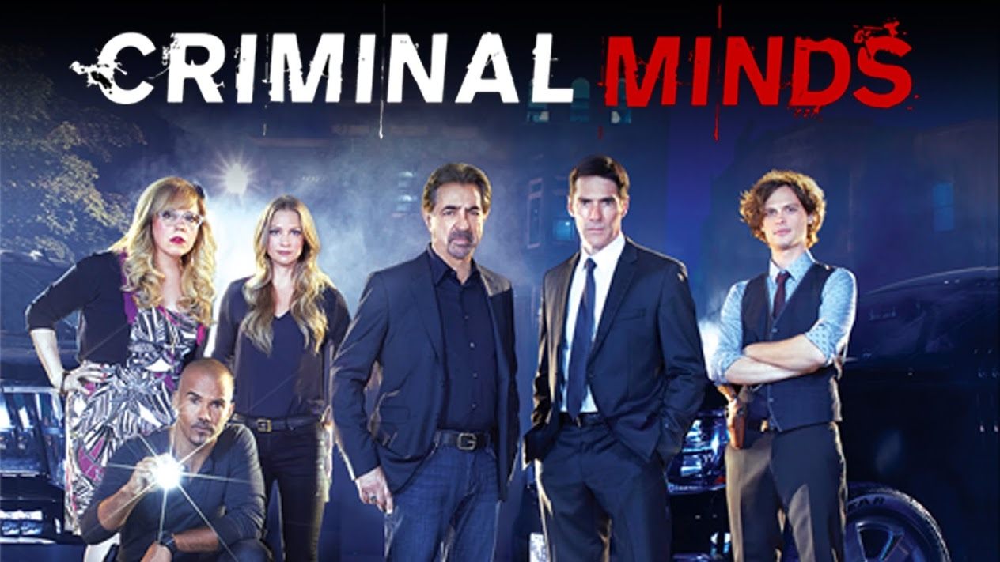
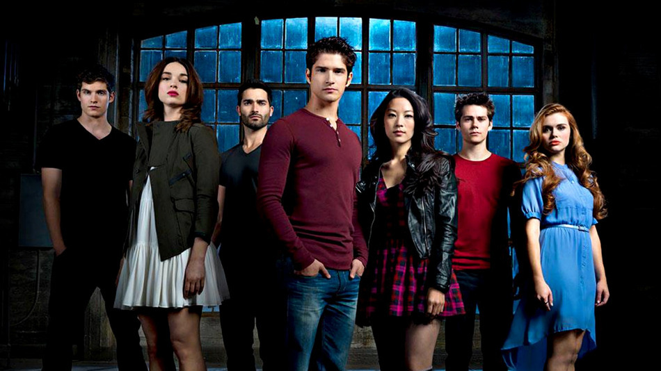

This show is about a group of FBI Agents who work
together to profile unsubs and solve murders. I like
this show because it walks you through the agent's
thought process and how they put together pieces to
solve a murder. In addition, it shows the balance of
humor and seriousness in a workplace like this.
Finally, it shows the danger of this job and how it
can have an impact on the family of the agent.
Grey's Anatomy is a show about group of doctors who
started off as surgical interns and how they become
who they are today. This is a great show because it
expresses the struggle of being surgeons and having a
personal life at the same time. In addition, it shows
how they manage a balance between work and home.
Finally, it shows how thi job can be stressful and
that sometimes you have to make quick and good
decisions in situations where time is running out.

Teen Wolf is a supernatural show that is about a
teenager who was bit by a werewolf and how he tries
to protect the people he loves with his powers. I
like this show because teaches that not all bad
people are evil and that there are some people who
may seem emotionless, deep in their heart they care.